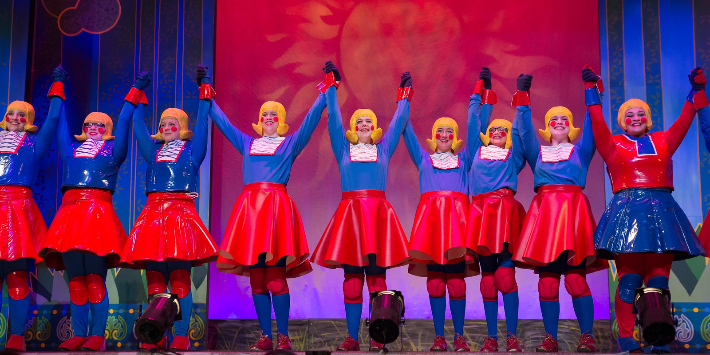
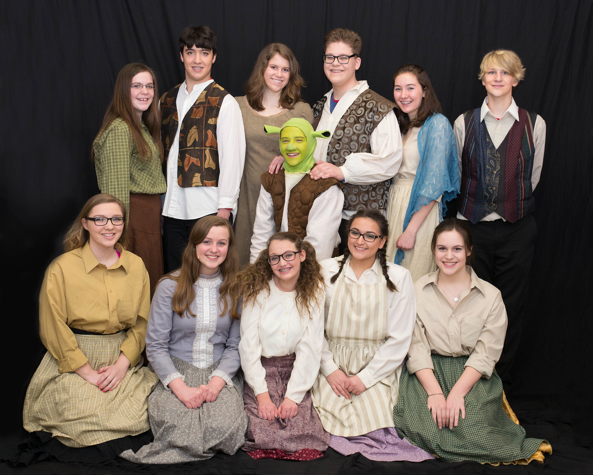
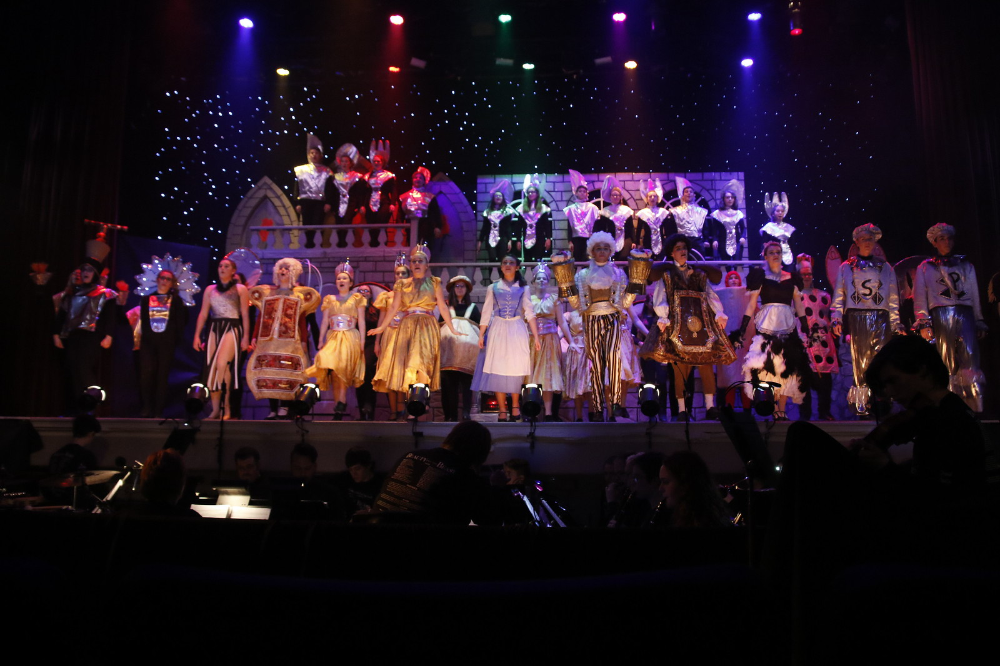
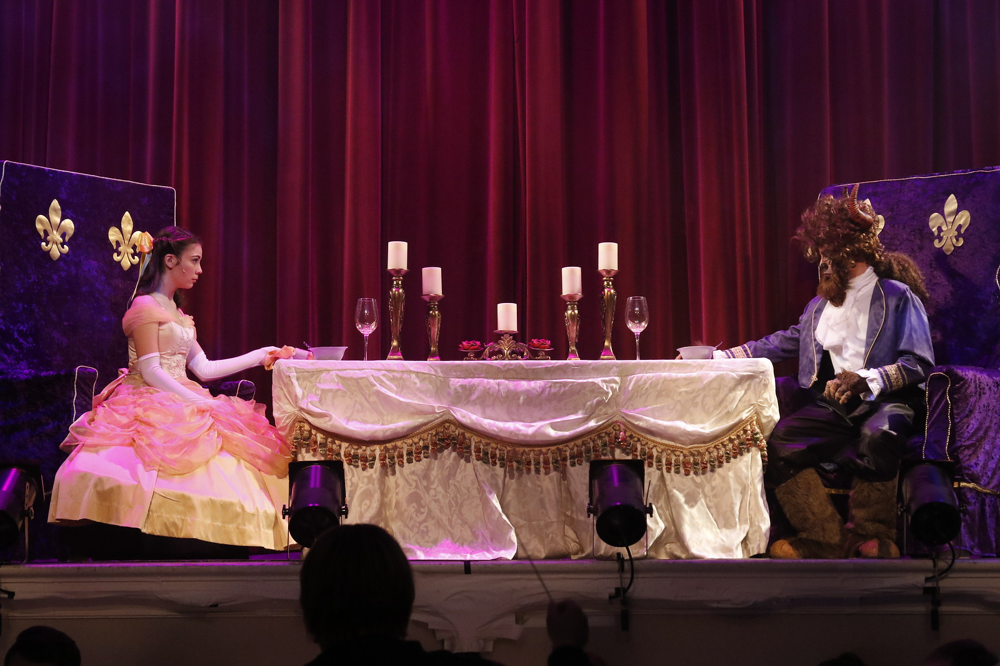
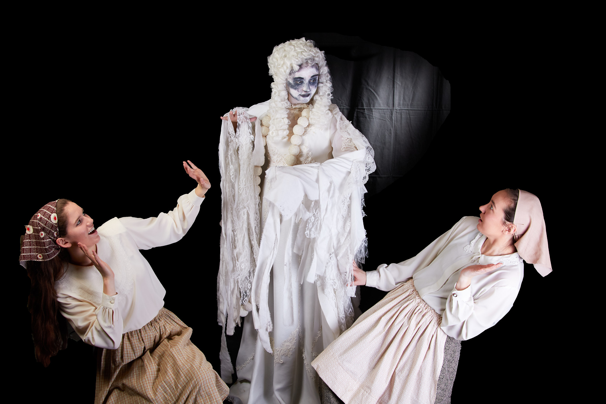
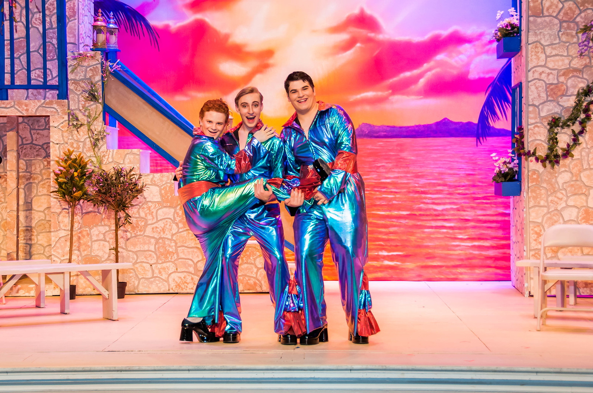
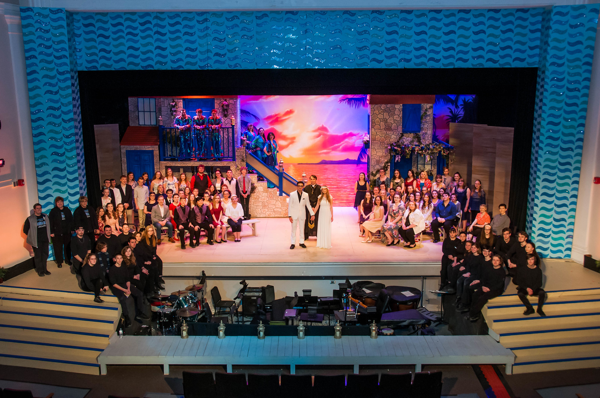

I have participated in Shrek the Musical, Beauty and the Beast, Fiddler on the Roof, and Mamma Mia.
My first muscial was Shrek the Musical. I participated in this musical my freshman year of high school. It was this play that gave me my love for this form of art.
 
My second musical was Beauty and the Beast. In this play I played as a spoon in the ensemble. It was fun with the very different mucic and the message from Shrek the Musical.
 
My thrid musial was Fiddler on the Roof my junior year of high school. This mucial takes place in the year 1905 in a fictional town called Anatevka. It was a very hard play to do correctly because the Jewish faith is a huge part of the story.

My fourth musical was Mamma Mia. This was the most physically and vocally exhasting and fun of all four. The music is very upbeat and you are constatly moving.
 